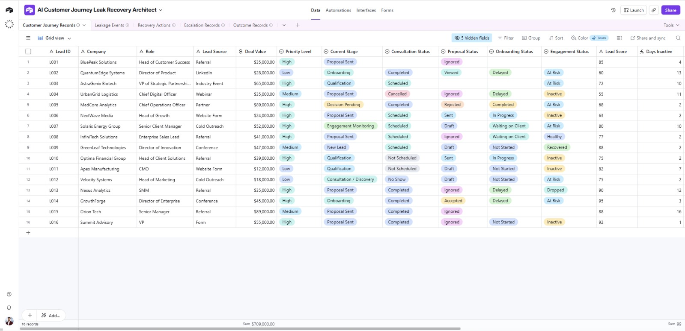
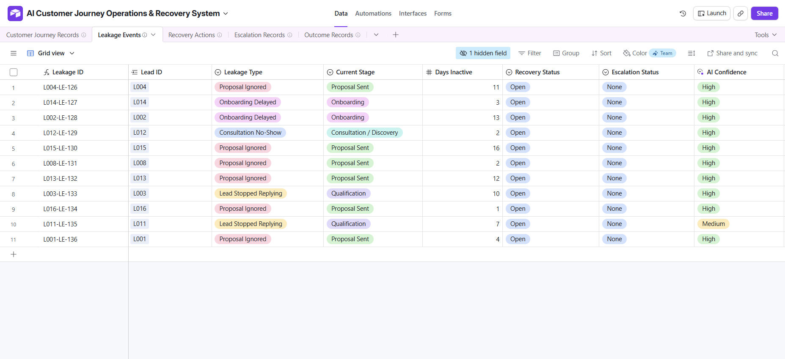
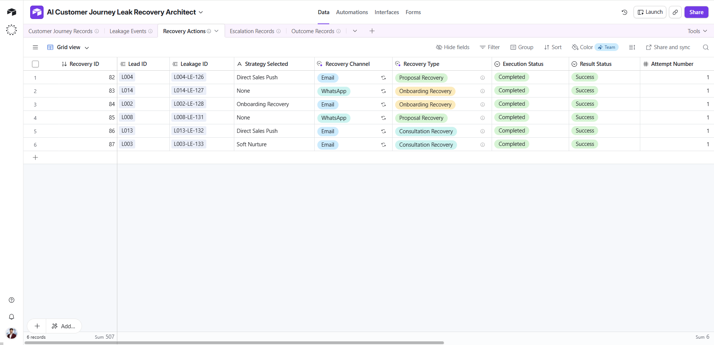
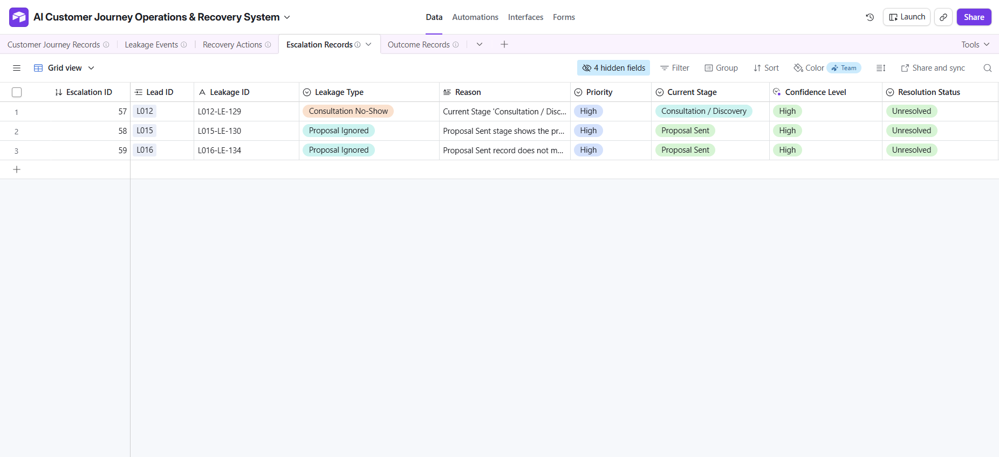
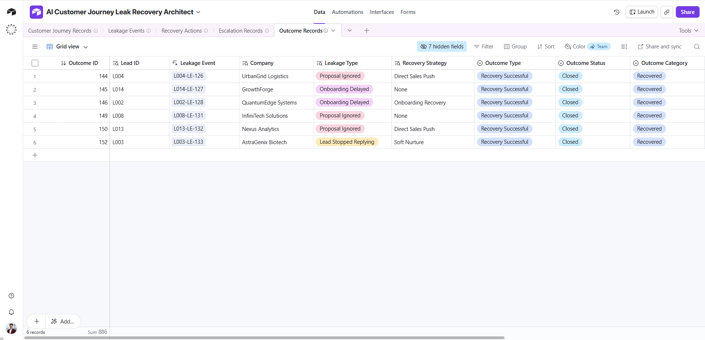
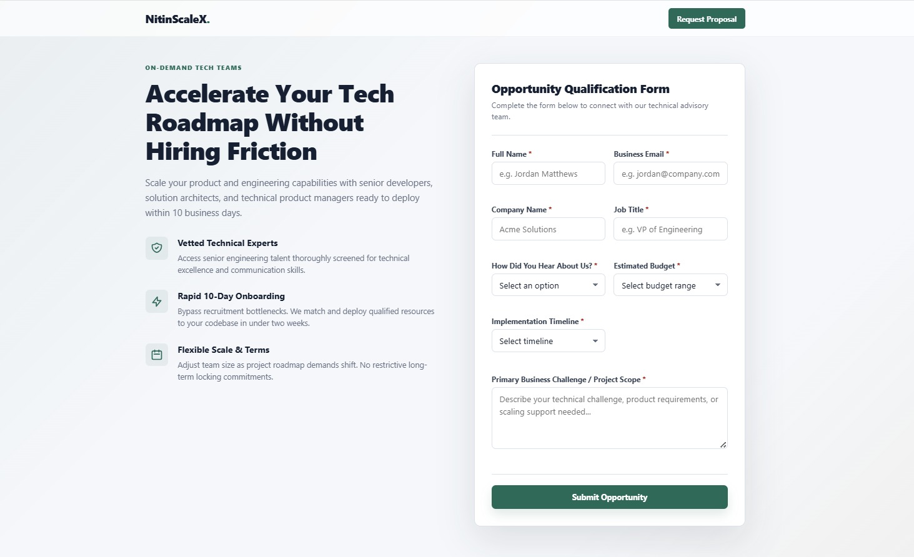
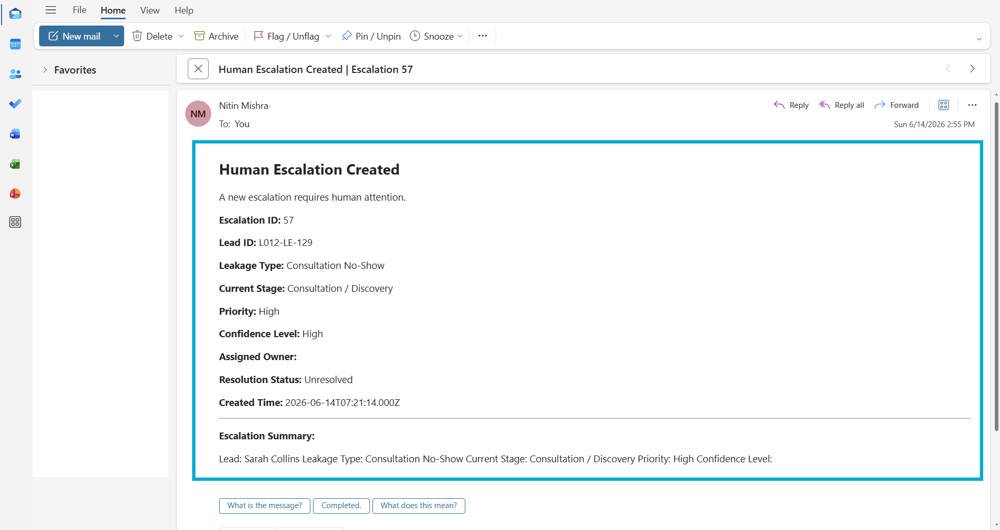

AI Customer Journey
Leak Recovery System
AI-assisted lifecycle recovery platform designed to detect customer journey leakage, execute recovery actions, manage escalations, and maintain closed-loop operational visibility across the customer journey.
Operational Overview
Modern pipeline operations struggle with stagewise lead progression. Leads drop between marketing, sales, and operations boundaries due to delayed follow-ups and system latency.
This platform resolves stagewise boundaries by introducing automated, SLA-driven leakage tracking. When an opportunity exceeds stage boundaries, the system immediately audits the customer journey record, determines recovery paths using AI reasoning, executes automated follow-ups, and manages human escalation when necessary.
Why This Matters
Business opportunities frequently stall between lifecycle stages. Without structured monitoring, recovery processes, and escalation governance, organizations lose visibility into customer progression and create preventable revenue leakage.
The Operational Gaps
Revenue Leakage
Friction points and delayed outreach cause high-intent prospects to go cold, resulting in lost revenue that is difficult to audit or trace.
Stalled Opportunities
Leads sit in mid-funnel stages indefinitely without triggers to re-engage, causing pipeline bloat and inaccurate forecasting.
Lifecycle Visibility Gaps
Operations teams lack visual timelines indicating precisely where customer journeys stall or when SLAs are breached.
Manual Recovery Processes
Outreach recovery relies on manual database checks and ad-hoc sales lists rather than instant, context-aware recovery automation.
Escalation Bottlenecks
Breached wait states and ignored notifications sit unresolved without automatic, manager-level routing and oversight.
Solution Layout
Below are the primary visual models defining the structural data flows and process separation parameters inside the platform. These architectural blueprints are embedded directly in PDF format.
System Architecture Diagram
This diagram illustrates the complete operational architecture of the AI Customer Journey Leak Recovery System.
The architecture combines lifecycle monitoring, leakage detection, AI-assisted decisioning, recovery execution, escalation management, and outcome evaluation into a structured closed-loop recovery framework.
The purpose of the architecture is to identify customer journey leakage, coordinate recovery actions, maintain operational visibility, and ensure stalled opportunities receive appropriate intervention before revenue is lost.
Diagram Purpose: Outlines the end-to-end data pipelines running from webhook ingestion to AI-logic routing, SMS/email re-engagement modules, and automated closed-loop database status deactivation.
Operational Data Architecture Diagram
This diagram illustrates the underlying operational data structure supporting the system.
Customer Journey Records act as the system of record, while Leakage Events, Recovery Actions, Escalation Records, and Outcome Records provide visibility into every recovery decision and customer journey outcome.
The architecture ensures traceability, reporting visibility, auditability, and closed-loop synchronization across the entire customer lifecycle.
Diagram Purpose: Defines relational database structure and linkage keys mapping Customer Journeys, Stage Entries, Recovery Audits, Escalation Incidents, and Outcome evaluations.
Why This Matters
A clear architecture creates operational visibility, separates responsibilities across system layers, and enables scalable lifecycle management.
Database Blueprints
The platform's relational database layout in Airtable structures historical context so that monitoring automation behaves reliably. Select below to review each database table.
Customer Journey Records Table
Captures all incoming lead details, profile metadata, stage timestamps, and active owner identifiers. Serves as the single system of record for active tracking.

Leakage Events Table
Tracks stage boundaries breaches. If a record remains in a single funnel stage past its allowed SLA, a Leakage Event record is instantiated to log the violation.

Recovery Actions Table
Logs outreach events executed by automation engines, storing messaging copies generated by AI, outreach timestamps, and user interaction indicators.

Escalation Records Table
Registers exceptions and manages human review protocols when automated recovery actions fail to re-engage the customer within secondary SLA constraints. Escalations trigger dedicated communication channels and ownership updates to coordinate manual intervention.

Outcome Records Table
Logs resolution indicators (Lost, Recovered, Stalled) and closes active leakage alerts, syncing status updates back to source platforms.

Why This Matters
Operational systems depend on structured records. Consistent data architecture creates visibility, accountability, and reliable automation behavior.
Entry System Flow
Intake mechanics standardise customer profile data entering the tracking framework. Select each step inside the pipeline layout below to display the corresponding interface.
Intake Interface
Prospects submit requirements via structured forms, capturing validated lead profile attributes cleanly.
Ingestion Webhook
A Make.com webhook extracts the form payload, Normalizes formatting, and maps entry stages.
Alert Notification
If critical boundary violations or intake anomalies occur, a formatted alert is sent to operations teams.



Why This Matters
Every operational system depends on reliable intake. Structured intake ensures consistent data quality and predictable lifecycle monitoring.
Scenario Inventory
The platform's execution layer is split into modular automation scenarios. Click on any card below to expand details and inspect its Make.com blueprint canvas.

This scenario triggers immediately upon webhook reception. It normalizes data formats, validates record integrity, and instantiates the tracking logic, avoiding stage boundary data losses.

Constructs rich-text escalation emails mapping out the stalled lead's journey. It dispatches formatted notification alerts to human operations teams, prompting the Human Review Escalation Process and adjusting CRM Ownership Visibility.

The final gatekeeper. When a lead is recovered or manually logged as resolved, this scenario updates the database logs to capture outcome classifications (Recovered, Lost, Closed), ensuring analytics purity.
Why This Matters
Modular automation architecture improves maintainability, scalability, troubleshooting, and operational visibility.
System Logic Blueprint
This chart documents the sequential logic pathways executed by the platform from lead initialization to final outcome tracking.
Lead Created & Intake Logged
Opportunity profiles enter the ingestion webhook. Data schemas are validated, and a Customer Journey Record is instantiated.
Continuous Stage Monitoring
Stage entries calculate active durations. Timelines monitor entry dates against established stage SLA thresholds.
SLA Breach & Leakage Detected
If stage boundaries exceed allowable limits, a Leakage Event is created, capturing profiles for recovery routing.
Contextual AI Evaluation
The system audits historical email logs and CRM notes, determining re-engagement opportunities and drafting messages.
Recovery Outreach (OR Human Escalation)
Formulated recovery outreach dispatches via email/SMS. If no response occurs in 48 hours, escalation paths trigger notification emails for manual review.
Outcome Audit & Closed-Loop Sync
Interactions close. Result categories are logged, alarms release, and external databases synchronize.
System Discipline
Operational controls and boundaries enforce system reliability, prevent communication fatigue, and guarantee that human intervention is activated when confidence thresholds are breached.
Maximum Recovery Attempt Controls
Recovery actions are limited to defined attempt thresholds to prevent excessive outreach, communication fatigue, and automated recovery loops.
Human Escalation Boundaries
High-risk opportunities, unresolved recovery events, and low-confidence situations are routed to human review rather than handled entirely through automation.
Confidence-Based Decision Routing
Recovery recommendations are evaluated using confidence scoring logic to determine whether automated action or human intervention is more appropriate.
SLA Monitoring Rules
Lifecycle stages are monitored against predefined timing thresholds to identify stalled records and trigger leakage detection logic.
Recovery Loop Protection
The system prevents duplicate recovery sequences and repeated escalation cycles by tracking prior recovery history and recovery status.
Outcome Classification Standards
Every recovery attempt is classified according to a defined outcome framework, ensuring consistent reporting and operational visibility.
Closed-Loop Synchronization Controls
All recovery, escalation, and outcome records are synchronized back to the primary customer journey record to maintain a single source of operational truth.
Design Principles
Below are the critical design philosophies applied during the construction of the system to guarantee long-term stability and platform independence.
Lifecycle-First Design
Focuses on visual timeline tracking rather than task lists. Keeps opportunities moving through active boundaries instead of letting them sit in stagnant databases.
Journey Record as Truth
Airtable serves as the master database of lifecycle entries. All automations and managers pull context from the unified Customer Journey Record.
Modular Automation Scenarios
Each engine runs independently on Make.com. If a re-engagement API fails, ingestion and SLA tracking continue operating without disruption.
Structured Recovery Governance
Enforces strict SLAs. Automations cannot spam prospects; recovery outreach schedules are tightly locked in database rules.
Human Escalation Layer
If automated logic fails to trigger re-engagement, the system sends Escalation Notification Emails and initiates the Human Review Escalation Process, keeping manual overrides clean.
Outcome-Based Resolutions
Alert deactivations require outcome parameters. No alarm is silenced without logging a classification indicator.
Closed-Loop Synchronization
Ensures that system closures sync updates back to CRM systems instantly, maintaining platform parity and reporting accuracy.
Operational Performance
Centralized Lifecycle Visibility
Establishes visual stage entrance timelines and SLA audit charts, removing visibility gaps across boundaries.
Automated Leakage Detection
Stalled opportunities are detected within one hour of stage SLA expiration, removing human lag.
Structured Recovery Execution
AI-drafted re-engagement outreach dispatches instantly, reducing sales team outreach workloads.
Human Escalation Management
Breached wait states trigger Escalation Notification Emails, initiating the Human Review Escalation Process and CRM task logs.
Outcome Classification
Enforces data integrity by requiring outcome logs for deactivations, establishing pure pipeline metrics.
Closed-Loop Synchronization
Ensures that outcome classifications are synchronized back to external CRMs automatically, maintaining platform parity.
System Documentation
This case study documents the complete architecture, operational logic, automation framework, recovery methodology, escalation governance, and outcome evaluation model behind the AI Customer Journey Leak Recovery System.
The document provides a detailed breakdown of the business problem, system design decisions, implementation structure, and operational reasoning used throughout the project.